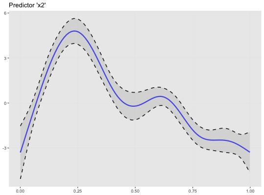

This function plots the smoothing function of selected GAM(M) models
using the ggplot2 plotting system.
plot_gam(model = NULL, pred = NULL, col_line = "blue", ci_line_col = "black", ci_line_type = "dashed", ci_fill = "grey", ci_alpha = 0.4, ci_line_size = 0.8, sm_fun_size = 1.1, title = NULL, xlab = NULL, ylab = NULL, limits_y = NULL, breaks_y = NULL)
| model | A fitted model of class |
|---|---|
| pred | The predictor of the fitted model to plot the smooth function of. |
| col_line | Character. Sets color for smoothing function. Default to
|
| ci_line_col | Character. Sets color for confident interval line of
smoothing function. Default to |
| ci_line_type | Character. Sets linetype of confident interval line
of smoothing function. Default to |
| ci_fill | Character. Fill color of area between smoothing function and its confident interval lines. |
| ci_alpha | Numeric (range: 0-1). Opacity value of confidence interval shading. |
| ci_line_size, sm_fun_size | Line sizes. |
| title | Character. Plot title. |
| xlab | Character. X-axis title. |
| ylab | Character. Y-axis title. |
| limits_y | Numeric of length two. Sets y-axis limits. |
| breaks_y | Numeric of length three. Sets y-axis breaks.
See seq.
Values need to be given in a |
# load data (Source: ?mgcv::gam) and fit model library(mgcv) fit_gam <- mgcv::gam(y ~ s(x0) + s(I(x1^2)) + s(x2) + offset(x3) + x4, data = data_gam) library(oddsratio) plot_gam(fit_gam, pred = "x2", title = "Predictor 'x2'")